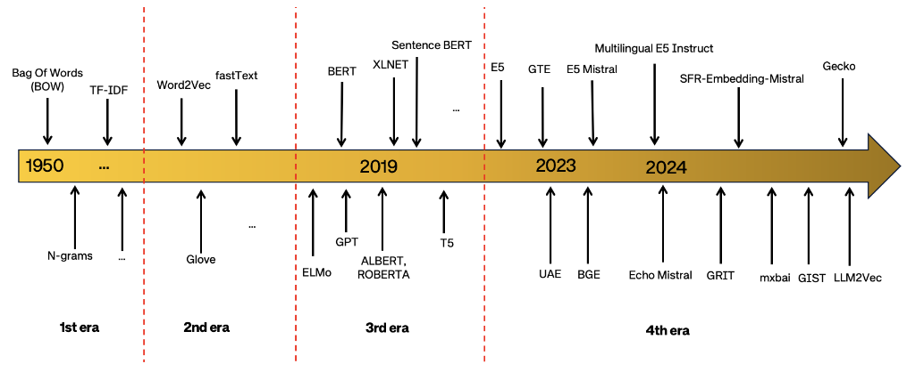
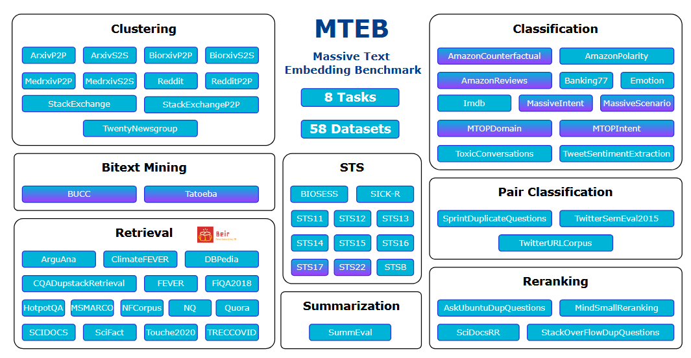
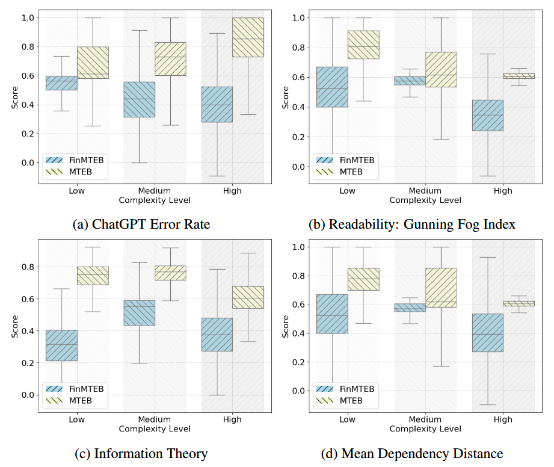

Embedding Models #
Overview #
There are a large number of embedding models built in different time in history. As described in (Hongliu, 2024), there are 4 era:
- Count‑based (e.g. TF‑IDF, LSA)
- Static dense word embeddings (Word2Vec, GloVe, FastText)
- ontextualized embeddings (ELMo, GPT, BERT)
- Universal text embeddings – capable across varied tasks

Comparison of the Four Eras of Text Embeddings #
| Feature / Era | 1. Count-Based | 2. Static Word Embeddings | 3. Contextualized Embeddings | 4. Universal Text Embeddings |
|---|---|---|---|---|
| 🔤 Unit of Representation | Word/Sentence | Word | Word | Sentence/Text |
| 🧮 Vector Type | Sparse | Dense (fixed-size) | Dense (contextual) | Dense (general-purpose) |
| 📚 Context Used | ❌ No | ⚠️ Local window | ✅ Full sentence | ✅ Full input |
| ⏳ Word Order Captured | ❌ No | ❌ No | ✅ Yes | ✅ Yes |
| 🔄 Polysemy Support | ❌ No | ❌ No (same “bank”) | ✅ Yes | ✅ Yes |
| 📊 Dimensionality | High (thousands) | Low (100–300) | Medium–High (768–2048) | Compact (256–1024) |
| ⚡ Inference Speed | ✅ Fast | ✅ Fast | ❌ Slower | ✅ Fast (post-training) |
| 🧪 Typical Models | TF-IDF, LSA, LDA | Word2Vec, GloVe, FastText | ELMo, GPT, BERT | SimCSE, E5, BGE, Gecko |
| 🧰 Best For | Simple baselines | Word similarity/analogy | Fine-tuned NLP tasks | Search, clustering, general NLP |
| 📉 Weaknesses | No semantics | No context, no polysemy | Heavy computation | Still limited on logic/negation |
Evaluation #
According to MTEB (Niklas at el, 2023), bmbedding models are evalulated in different tasks. There are 8 task categories and 56 datasets for different task categories.

| Task Type | What It Measures | Example Dataset |
|---|---|---|
| Retrieval | How well embeddings retrieve relevant docs | MS MARCO, BEIR |
| Reranking | Rank candidates by relevance | TREC-COVID, SciFact |
| Clustering | Group similar texts | Arxiv, StackExchange |
| Classification | Use embeddings for supervised tasks | Amazon Reviews |
| STS (Similarity) | How similar two texts are | STSBenchmark, SICK |
| Pair Classification | Textual entailment, semantic match | MRPC, PAWS |
| Summarization | Embedding-level summarization quality | XSum, Reddit TLDR |
| Question Answering | Open-domain QA via embedding search | NQ, HotpotQA |
Finding #
- Universal embedding models (e.g., E5, BGE, Gecko) generalize well across multiple MTEB tasks.
- Models like SimCSE are strong baselines, but newer approaches significantly outperform them, especially on retrieval and clustering.
- Retrieval +100% or more (massive gains)
- Reranking +22–28%
- Clustering +35–57%
- Pair Classification +15–20%
- Gains on Semantic Textual Similarity (STS) more modest (~8%)
- Summarization tasks saw no real improvement over baseline
- However, summarization and negation sensitivity remain weak spots.
- Negation sensitivity: current embeddings poorly distinguish negated sentences (“happy” vs “not happy”). That issue is picked up in follow‑on work showing sub‑1% improvements in negation-aware benchmarks unless special training or reweighting is applied
- Multilingual / domain coverage: most models are English‑centric and evaluated on similar domains to training data (e.g. QA, Reddit)—thus generalization across diverse real‑world domains (finance, health, culture) is underexplored
- Summarization task gap: no top embedding beats SimCSE baseline
Domain specific embedding model #
In this paper (Yixuan et al, 2024), author analysis why we need a domain specific model and proposed some dataset and benchmark for Finance.
Why we need a domain specific model #
In general there are following resons:
-
Specialized Vocabulary
General models are trained on web-scale corpora (Wikipedia, Reddit, etc.). Domains like finance use terms like “yield curve inversion,” “credit default swap,” “EBITDA” — which general models rarely see or misinterpret.
Example: A general model might equate “liquidity” with “fluid” rather than “available capital.”
-
Different Semantics
Words can mean different things depending on the context:
- “Margin” in finance (loan collateral)
- “Margin” in design (white space)
- “Operation” in math, medicine, or military
Domain models learn the correct sense in context.
-
Formal/Technical Language
- Sentences are often long, formal, and complex.
- Domain documents (e.g., financial reports, legal filings, scientific papers) include jargon and unusual syntax.
- General models are not trained to handle this effectively.
The paper showed that ChatGPT’s own error rate is higher on financial tasks compared to general ones — meaning even top-tier LLMs struggle.
-
Domain-Specific Reasoning
- In finance, conclusions often depend on economic logic or quantitative reasoning (e.g., interpreting balance sheets).
- In medicine, models must connect symptoms, diagnoses, and treatments — general embeddings can’t model this well without extra training.
-
Empirical Evidence (from FinMTEB)
- General-purpose embeddings perform up to 100% worse on finance tasks vs general ones.
- There’s no reliable correlation between model performance on MTEB (general) and FinMTEB (domain-specific).
- So, even top-ranked general models can’t be trusted in domain applications without re-evaluation or adaptation.
Quantified result #
There are some quantified result on how the general embedding model vs. domain specific embedding model.
Four different index are proposed to measure data complexity.
- ChatGPT Error Rate. The first measure quantifies how challenging it is for ChatGPT to answer a dataset’s questions.
- Information Theory. We borrow the concept of information entropy from information theory to measure the complexity of a text sequence.
- Readability. We also use readability to measure dataset complexity, specifically applying the Gunning Fog Index (Gunning, 1952), which factors in sentence length and the number of complex words
- Mean Dependency Distance. Finally, we measure linguistic complexity using the dependency distance between two syntactically related words in a sentence (Oya, 2011). A longer dependency distance indicates that more context is needed for comprehension, reflecting greater sentence complexity.
A subgroup analysis is conducted to examine the impact of the domain on embedding model per- formance.
- First, dataset complexity is calculated using one of the four complexity measures and categorize the datasets into three subgroups: low, medium, and high complexity. This ensures that METB and FinMTEB datasets within each subgroup have the same level of complexity.
- Then, the average performance score of seven LLM-based embedding models across datasets is calculated within each group.
The result is shown as below:  It can be observed that:
- First, embedding models perform substantially worse on FinMTEB datasets compared to MTEB datasets, even after accounting for dataset complexity.
- Second, embedding models perform worst on FinMTEB datasets with the highest complexity levels.